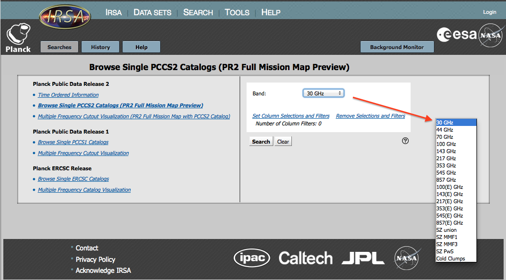
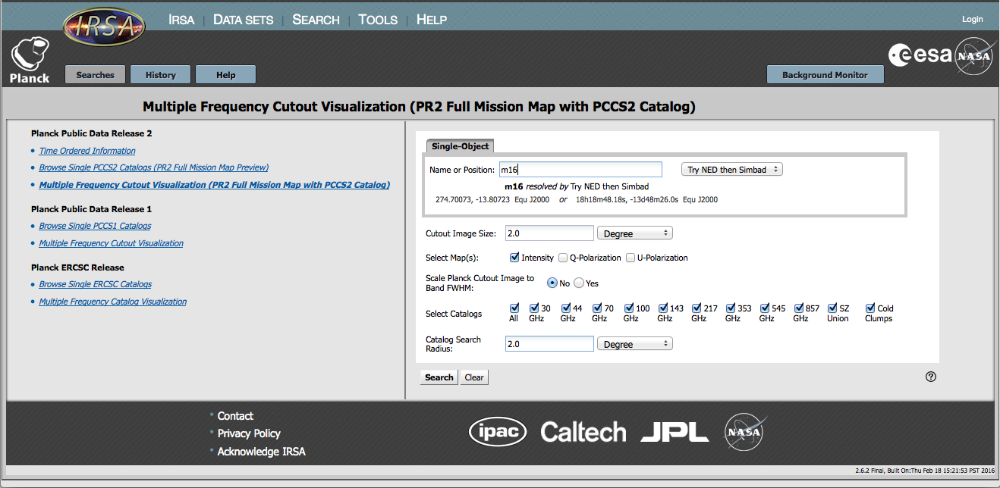

You must search each delivery separately; PR2 is the latest and most comprehensive, but PR1 and the ERCSC releases are also available.
Contents of page/chapter:
+Time Ordered Information (TOI) Search
+Browse Catalog Search -- Single Frequency Search (all-sky)
+Cutout Visualization Search -- Multiple Frequency Search by Position
Time Ordered Information (TOI) Search
TOI data consists of the measurements of the sky intensity obtained by
the Planck spacecraft as it spun at 1 revolution per minute. Each
measurement is tagged by the location on the sky that was pointed to,
the time of the observation, and whether or not a solar system object
was within the beam.
Planck TOIs can be selected for download as FITS binary tables and for display. The TOI Search page allows you to chose the TOIs you want by location, frequency, specific detectors, and (optionally) by a range of dates.
These TOI have been pre-extracted from the entire-mission PLA
files  . For ease of use, the data have already had offsets and
per-detector monopoles applied, and all flagged data removed (except
SSO [=Solar System Objects] if selected). Weights, calculated from the
RIMO (=Reduced Instrument Model), are supplied in the header for
correct combination of multiple detectors.
. For ease of use, the data have already had offsets and
per-detector monopoles applied, and all flagged data removed (except
SSO [=Solar System Objects] if selected). Weights, calculated from the
RIMO (=Reduced Instrument Model), are supplied in the header for
correct combination of multiple detectors.
Here is an example TOI search. The output of this search can be sent to the Minimap tool. Minimap creates a 2D projection of the full map at the specified location, for more details please see the Results page.

This search specifies a 2 degree square field centered on the Galactic
Center which is bright and exhibits some structure at these
frequencies. The query form requests a single object. We can enter the
position or as an object name to be resolved via NED or Simbad. We
enter the name of "Sgr A*" which is resolved by NED. We select a 2
degree square field.
The SSO Flag selection has two choices, where "SSO" means "Solar System Object." 'F' means we do not want TOI samples in which a bright Solar System object (the planets Mars, Jupiter, Saturn, Uranus, Neptune) was within the detector beam. 'All' means we do allow these data to be included.
The Planck band is specified via the Select Frequency. The band selection then populates the list of available detectors at that frequency. We choose '70 GHz' and the 18M and 19S detectors for this example.
In the Optional Search Constraints we set the start and end dates to '2010-01-1' and '2010-12-31', respectively, thus choosing only observations in calendar year 2010.
The results of this search continue in the Results section.
Browse Catalog Search
-- Single Frequency Search (all-sky)
You may view any of the all-sky Planck catalogs including those based
on the multi-frequency detection methods and for each frequency band.
Another way of thinking of this is searching a single frequency, but
all positions.
To access this search option, selet "Browse Single [...] Catalogs" for your desired release. Because it includes all of the mission data, PR2 is a good place to start if you have never done this before.
The catalogs in each of the data releases can be selected with the pull-down menu from the search page, an example of which is given below as a "callout" in the screen snapshot.

Content filtering on the all-sky catalog columns can be performed from this point in the process by clicking on the "Set Column Selections and Filters" link. This pops up a window in which you can select either the short or the long form for the catalog display (long form has more columns), select the individual columns to be displayed, and set constraints on individual column values (see Filtering for more information).
This search will return the rows of the catalog, selected by the input parameters, together with preview images. The results are displayed with the catalog and FITS cutout images. The table has many columns with positional, photometric, and size information about the source in question. See the section on search results.
Cutout Visualization Search -- Multiple Frequency Search by Position
You may search by position across all of the Planck catalogs.
Another way of thinking of this is searching a single position, but
across all frequencies.
To access this search option, selet "Multiple Frequency Cutout Visualization [...]" for your desired release. Because it includes all of the mission data, PR2 is a good place to start if you have never done this before.
This is a position search. For this search, you may enter target names, which will be automatically resolved into coordinates using NED or Simbad. Alternatively, you may enter coordinates directly. These coordinates can be in decimal degrees or in hh:mm:ss dd:mm:ss format. By default, it assumes you are working in J2000 coordinates; you can also specify galactic, ecliptic, or B1950 coordinates as follows:
As you are completing a valid coordinate entry, it echoes back to you what it thinks you are entering. Look right below the box in which you are typing the coordinates to see it dynamically change.

After the position, you need to enter the size of the cutouts you want to see. Caution: pick your units from the pulldown first, and then enter a number; if you enter a number and then select from the pulldown, it will convert your number from the old units to the new units. There are both upper and lower limits to your search radius; it will tell you if you request something too big or too small.
Next, you need to select which maps you want, and how you want the Planck cutout image to be scaled.
Then, you tell it which catalogs you want it to search, and the search radius for those catalogs. Again, pick your units from the pulldown first, and then enter a number.
Click search to send it searching.
A multi-frequency (position) search will return the rows of the catalog, selected by the input parameters, together with preview images. The results are displayed in tabs, and each of these tabs correspond to the selected catalogs. Each of these tables has many columns with positional, photometric, and size information about the source in question. See the section on search results.
Note that, by default, these searches return a table of Planck sources, but the table is not sorted by distance of a source from the submitted coordinate. To do that, you must click on the column labeled "dist". The "dist" and the associated "angle" (for Position Angle) columns are appended to the catalog column list so are found at the far right. Scrolling is usually necessary to see these columns.